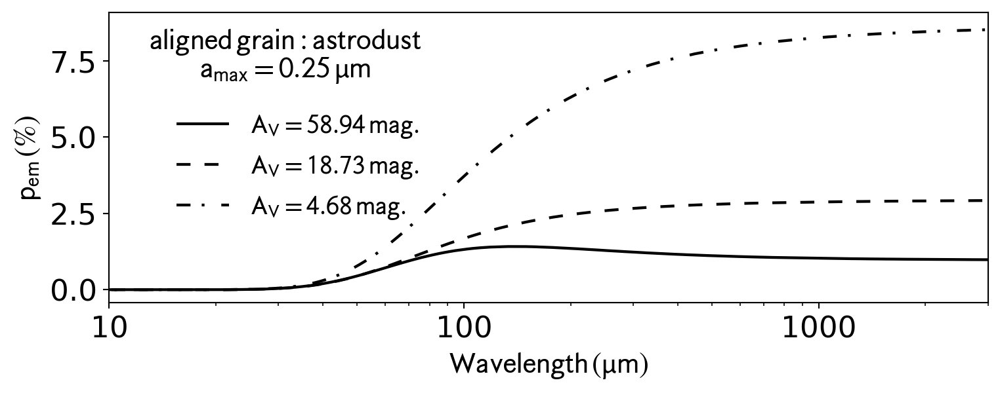

The input parameters (e.g. ngas, U or Tdust) can be adopted from observations, thus it can be useful to model large physical scales with different physical properties. The basic tutorial on setting and execute this 0D model is introduced in Tutorials.
2 DustPOL-py: isolate cloud
2.1 Build a spherical isolated cloud
Let’s take an example with a specific set of the physical parameters as in the ‘input_template.dustpol’.
The gas volume density is followed \[\begin{equation}
n_{\rm gas} = n0 ~~~{\rm for}~~~ r<r_{\rm flat}, ~~~{\rm while}~~~ n_{\rm gas}=n0\times \left(\frac{r_{\rm flat}}{r}\right)^{-\alpha}
\end{equation}\]
The gas column density (\(N_{\rm gas}\)) integrated from the center to the position \(r\) in the envelope along the radial distance, and the corresponding visual extinction (\(A^{\rm outward}_{V}\)) are \[\begin{equation}
\begin{split}
N_{\rm gas}(r) &= \int^{r}_{0} n_{\rm gas}(r')dr' ~~~ {\rm (cm^{-2})}\\
A^{\rm outward}_{\rm V} &= \left(\frac{N_{\rm gas}}{5.8\times 10^{21}\,\rm cm^{-2}}\right)R_{\rm V} ~~~ {\rm (mag.)}
\end{split}
\end{equation}\] where \(R_{\rm V}\) is the total-to-selective extinction ratio. \(R_{\rm V}=3.1\) for a typical aISRF. The visual extinction (\(A^{\rm ext}_{\rm V}\)) measured from the envelope to the center is expressed as \[\begin{equation}
\begin{split}
A^{\rm ext}_{\rm V} &= A^{\rm outward}_{\rm V}(r\gg r_{\rm flat}) - A^{\rm outward}_{\rm V}(r) \\
&= 10.3\left(\frac{n_{0}}{10^{8}\,\rm cm^{-3}}\right)\left(\frac{r_{\rm flat}}{10\,\rm au}\right)\left(\frac{R_{\rm V}}{4}\right) \times \left\{
\begin{array}{l l}
\left(\frac{\alpha}{\alpha-1} - \frac{r}{r_{\rm flat}}\right) & \quad {\rm ~for~} r\le r_{\rm flat},\\
\frac{1}{\alpha-1}\left(\frac{r}{r_{\rm flat}}\right)^{1-\alpha} & \quad {\rm ~for~} r>r_{\rm flat},
\end{array}\right.
\end{split}
\end{equation}\] It is worth noticing that this visual extinction differs from the line of sight \(A_{\rm V}\).
The cloud has no central radiation source, and embeded in a radiation field. The radiation field from the cloud’s surface is then attenuated radially toward the center. The dimensionless radiation intensity (weighted to the aISRF) is \[\begin{equation}
U(A^{\rm ext}_{\rm V}) = \frac{\int^{\infty}_{0}u_{\lambda}(A^{\rm ext}_{\rm v})d\lambda}{8.64\times 10^{-13}\,\rm erg\,cm^{-3}} = \frac{U_{0}}{1+0.42\times \left(A^{\rm ext}_{\rm V}\right)^{1.22}}
\end{equation}\] with \(U_{0}\) the radiation intensity at the surface (\(U=1\) for a typical aISRF).
The mean wavelength of the aISRF is also parameterized as \[\begin{equation}
\bar{\lambda}(A^{\rm ext}_{\rm V}) = \frac{\int_{0}^{\infty} \lambda u_{\lambda}(A^{\rm ext}_{\rm V})d\lambda}{\int_{0}^{\infty} u_{\lambda}(A^{\rm ext}_{\rm V})d\lambda} = \bar{\lambda}_{0}\left[1+0.27\times \left(A^{\rm ext}_{\rm V}\right)^{0.76}\right]
\end{equation}\] where \(\bar{\lambda}_{0}\) is the mean wavelength of the ISRF at the cloud surface, and for the typical aISRF, \(\bar{\lambda}_{0}=1.3\,\mu\)m.
In the dense and cold environments like starless cores, gas and dust are in thermal equilibrium, i..e, \(T_{\rm gas}=T_{\rm dust}\). Therefore, one can determine the gas and dust temperatures using the radiation strength \(U\) as \[\begin{equation}
T_{\rm d}(A^{\rm ext}_{\rm V}) = T_{\rm gas}(A^{\rm ext}_{\rm V}) = 16.4\,{\rm K}\times \left(\frac{a}{0.1\,\mu m}\right)^{-1/15}\left[U\left(A^{\rm ext}_{\rm V}\right)\right]^{1/6}.
\end{equation}\]
2.2 Parameter adjustments
To profile this cloud, there are four main input physical parameters that must be corrected: n0, rflat,rout and $\alpha$. To make a proper adjustment, we follows these steps
-- we vary these parameters from the input file
-- compute for the visual extinction or gas colume density
-- compare to observations (if available)
With DustPOL-py, we can estimate the map of visual extinction as follows. The shown map is seen to be similar with observations. Note that high-performance-computation is embedded
get_Av_map
import numpy as npimport matplotlib.pyplot as pltfrom matplotlib.colors import LogNormfrom DustPOL_py import DustPOL, isoCloud_profile, constants##Constantspc = constants.pc##GLOBAL ARGUMENTSargs=DustPOL('data/input_template.dustpol')model=isoCloud_profile()[x,y,z],_=model.isoCloud_model(args)##Call the get_map_Av rountineAv_los = model.get_map_Av(args)## Plot the computed Av mapfig,ax=plt.subplots(figsize=(9,9))im = plt.imshow( Av_los, interpolation='bilinear', origin='lower', cmap='magma', norm=LogNorm(vmin=1,vmax=50), extent=[x[0]/pc,x[-1]/pc,y[0]/pc,y[-1]/pc] )t=[1,10,20,30,40,50]cbar=plt.colorbar(im,ax=ax,ticks=t,format='%.0f',shrink=0.8)cbar.set_label('$\\rm A^{LOS}_{V}\\, (mag.)$')plt.xlabel('$\\rm x/pc$')plt.ylabel('$\\rm y/pc$')X, Y = np.meshgrid(x/pc, y/pc)CS = ax.contour(X, Y, Av_los,levels=[1,3,5,10,20,50],colors='white')ax.clabel(CS, inline=True, fmt='%.0f', fontsize=15)plt.xlim([-0.5,0.5])plt.ylim([-0.5,0.5])plt.show()
2.3 Compute the degree of dust polarization
2.3.1 Certain line of sights
After adjusting some important physical parameters, we can perform calculation for the results. We might be interested in certain line of sights, which can be done as
isoCloud_los
import numpy as npfrom DustPOL_py import DustPOL, constants##call DustPOL with the desired physical parametersexe = DustPOL('data/input_template.dustpol')amax=exe.amax*1e4##distance of LOSs from the centerlos_range = np.array([0.0,0.1,0.3])*constants.pc##computing degree of dust polarization along these LOSsfor los in los_range: exe.isoCloud_los( los, progress=True, save_output=True, filename_output=f"pol_r0={los/constants.pc:.2f}pc_amax={amax:.2f}" )
DustPOL-py returns output for futher analysis. There are many ways to plot and analyse the output fiels in the ascii format. DustPOL-py provide a simple build-in module, namely analysis for plotting the results.
This is an example how to use analysis to plot the polarization spectra along different LOS.
import numpy as npimport matplotlib.pyplot as pltfrom DustPOL_py import analysisoutput_abs=[f"output/pol_r0={los:.2f}pc_amax=0.25_abs.dat"for los in np.array([0.0,0.1,0.3]) ]output_emi=[f"output/pol_r0={los:.2f}pc_amax=0.25_emi.dat"for los in np.array([0.0,0.1,0.3]) ]fig_abs,ax_abs=plt.subplots(figsize=(9,3))fig_emi,ax_emi=plt.subplots(figsize=(9,3))analysis.plot_pl(output_abs,color='k',ax=ax_abs)analysis.plot_pl(output_emi,color='k',ax=ax_emi)

2.3.2 Entire cloud on plane of sky
We recommend to set parallel=True in the input file for a high-performance calculation process. With a 8-core CPU, DustPOL-py can take about 2 minutes to compute 1240 models.
isoCloud_pos
from DustPOL_py import DustPOL##call DustPOL with the desired physical parametersexe = DustPOL('data/input_template.dustpol')##computing degree of dust polarization on POS for entire cloudexe.isoCloud_pos()
On the basis, this module returns a single file containing data along all LOS through the center to the edge. This is an example to plot the polarization spectra for some preferable \(A_{\rm V}\)
This is an example to plot the \(\lambda_{\rm max}\) at the peak starlight polarization as a function of \(A_{\rm V}\)
import matplotlib.pyplot as pltfrom DustPOL_py import analysisfig_abs,ax_abs=plt.subplots(figsize=(9,3))analysis.plot_lamav( ['output/p_amax=0.25_abs.dat','output/p_amax=0.30_abs.dat','output/p_amax=0.50_abs.dat'], color='k',ax=ax_abs )
At a specific wavelength, the relations of \(p_{\rm ext}/A_{\rm V}\) vs. \(A_{\rm V}\) for starlight polarization and \(p_{\rm em}\) vs. \(A_{\rm V}\) (\(p_{\rm em}\) vs. Stokes-I) for thermal dust polarization.
starlight polarization
This is an example to compare the \(p_{\rm ext}/A_{\rm V}\) vs. \(A_{\rm V}\) for amax=0.25,0.3,0.5 micron at 0.65\(\,\mu\)m. If we want to show the value of \(A_{\rm V}\) above which the \(p_{\rm ext}/A_{\rm V}\) drops with a slope of \(-1\), please set show_break=True, and get_info=True to get the slopes’ values
import matplotlib.pyplot as pltfrom matplotlib import rcParamsfrom DustPOL_py import analysis# Set global font sizercParams['font.size'] =14amax_range=[0.25,0.3,0.5]datafiles = [f'output/p_amax={amax:.2f}_abs.dat'for amax in amax_range ]fig,ax=plt.subplots(figsize=(4,6))analysis.plot_pav( datafiles, wavelength=0.65, color='k', show_break=True, get_info=True, ax=ax )fig,ax=plt.subplots(figsize=(4,6))analysis.plot_pav( datafiles, wavelength=1.65, color='k', show_break=True, get_info=True, ax=ax )
This is an example to compare the \(p_{\rm em}\) vs. \(A_{\rm V}\) for amax=0.25,0.3,0.5 micron at 850\(\,\mu\)m. Similarly to the starlight polarization, set show_break=True to identify when \(p_{\rm em}\) drops with a slope of \(-1\). Similarly, please set show_break=True, and get_info=True to get the slopes’ values
import matplotlib.pyplot as pltfrom matplotlib import rcParamsfrom DustPOL_py import analysis# Set global font sizercParams['font.size'] =14amax_range=[0.25,0.3,0.5]datafiles = [f'output/p_amax={amax:.2f}_emi.dat'for amax in amax_range ]fig,ax=plt.subplots(figsize=(4,6))analysis.plot_pav( datafiles, wavelength=850, color='k', show_break=True, get_info=True, ax=ax )
This is an example to compare the \(p_{\rm em}\) vs. \(I\) for amax=0.25,0.3,0.5 micron at 850\(\,\mu\)m. Similarly to the starlight polarization, set show_break=True to identify when \(p_{\rm em}\) drops with a slope of \(-1\)
import matplotlib.pyplot as pltfrom matplotlib import rcParamsfrom DustPOL_py import analysis# Set global font sizercParams['font.size'] =14amax_range=[0.25,0.3,0.5]datafiles = [f'output/p_amax={amax:.2f}_emi.dat'for amax in amax_range ]fig,ax=plt.subplots(figsize=(4,6))analysis.plot_pI( datafiles, wavelength=850, color='k', show_break=True, get_info=True, ax=ax )
If you want to check or get insights the results, we can monitor some key physical variables (alignment size, mean wavelength of radiation field, …). In addition to the map of \(A_{\rm V}\) shown above, we can shows the map of alignmnent size (\(a_{\rm align}\)), dust temperature (\(T_{\rm dust}\)) and mean wavelength of the radiation field (\(\bar{\lambda}\)) as